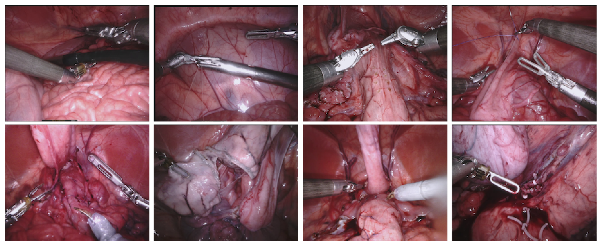
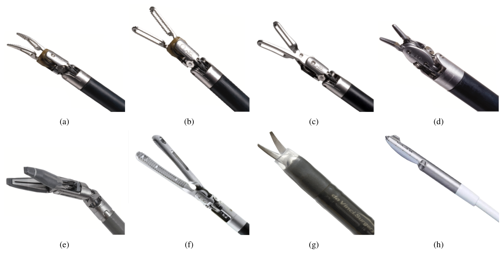
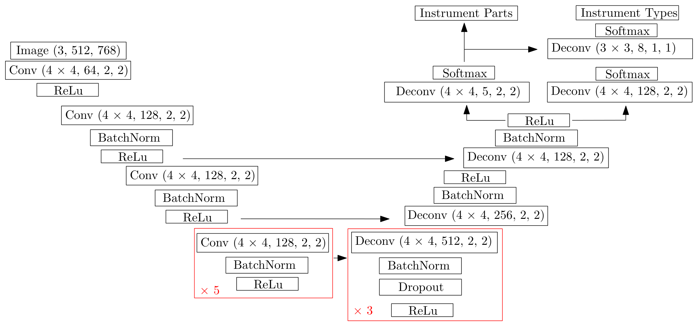
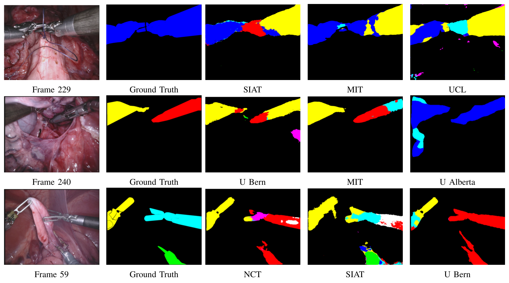
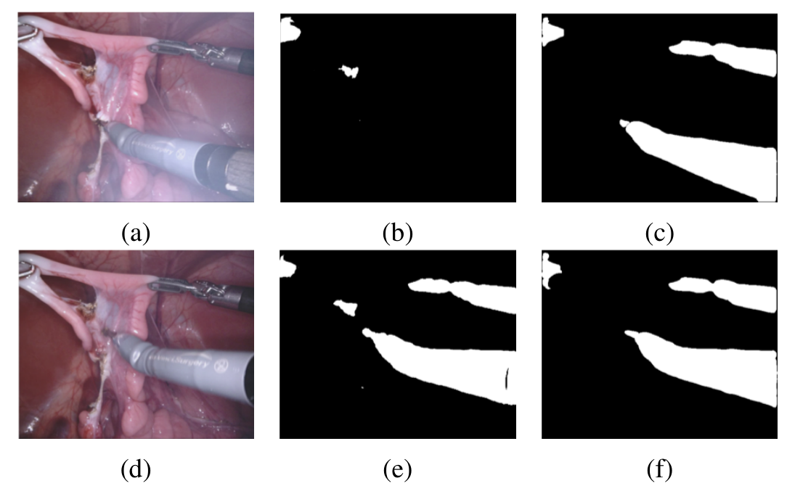

图文解读
1背景与动机
机器人手术里的器械分割一直缺一个可信的公共考场。 器械跟踪和增强现实叠加都要先知道哪些像素是器械，而领域里没有像 COCO 那样的公共数据和验证集。
2015 年 EndoVis 子挑战提供过机器人器械数据，但真值由 dVRK 正向运动学投影生成。正向运动学就是用关节读数推算器械位置，线缆驱动关节会让投影偏离真实轮廓；背景也很单一。在这样的数据上拿高分，说明不了模型真的会分割。
2017 年的挑战针对这两点做了改进：人工逐帧标注、10 段不同手术、增加部件和类型标签。
2核心观点速览
这是一份挑战赛总结，作者没有提出自己的方法。
- 数据：10 段猪腹腔 da Vinci Xi 手术，每段 300 帧、1 Hz 采样，共 3000 帧，其中 1800 帧训练。
- 任务：二值分割、部件分割（轴、腕、夹钳）、类型分割，难度逐级上升。
- 结果：二值 MIT 总分 0.888，5 支队伍超过 0.8；部件 TUM 0.751 最高；类型 MIT 只有 0.542。
- 边界：一次提交、无方差、无消融；一半测试帧与训练帧来自同一段手术。
接下来先看考场怎么搭，因为分数的含义取决于它。
3数据怎么采、怎么切
测试帧有一半与训练帧来自同一段手术。 数据集 1 到 8 各取前 225 帧训练、后 75 帧测试；数据集 9、10 的全部 300 帧只用于测试。
为防止用同段训练数据作弊，规则要求评测第 $k$ 段测试数据时不能用第 $k$ 段训练数据，于是每队至少要训练 9 个模型。额外手术数据被禁止，只允许用公开非手术数据预训练。作者承认这条规则只能依赖队伍自觉。

标注由 Intuitive Surgical 团队用 Viame 逐帧画多边形，只标左眼，每个样本由一名标注者完成、一名专家复核。标注者间一致性论文未说明。
4三级任务和评测口径
二值任务把器械与背景分开，超声探头、夹子和组织都算背景。部件任务把器械分为轴、腕、夹钳；单极弯剪看不到腕，整根护套算轴。类型任务要识别器械型号，两种双极镊因外观相近合并成一类。

评测用单类 IoU：
每帧对出现的类别取平均，再对帧平均得到每段分数，最后按数据集大小加权。数据集 9、10 的测试帧是其余段的 4 倍，所以它们主导总分。
部件总分是否计入背景类、类型任务的背景和缺失类如何计分，论文未说明。
5参赛方法的共同点
10 支队伍中 8 支用编解码类 CNN，主要差别在预训练、输入尺寸和后处理：
| 队伍 | 核心做法 |
|---|---|
| MIT | U-Net 加 ImageNet 预训练 VGG 编码器（TernausNet） |
| TUM | ResNet-50 编码器的残差编解码网络，镜面高光增强，保留与图像边界相连的连通域 |
| UB | 先二值后部件与类型的级联网络，不做外部预训练 |
| NCT | 共享主干、部件与类型双输出头 |
| UW | 不用机器学习，颜色阈值加 GrabCut |

下一节看这些差别在分数上留下了什么。
6结果说了什么
| 队伍 | 二值 | 部件 | 类型 |
|---|---|---|---|
| MIT | 0.888 | 0.737 | 0.542 |
| UB | 0.875 | 0.700 | 0.453 |
| TUM | 0.873 | 0.751 | 未参加 |
| NCT | 0.843 | 0.699 | 0.409 |
| SIAT | 0.803 | 0.667 | 0.371 |
| UCL | 0.785 | 0.623 | 0.337 |
正文写二值最佳为 0.854，表 I 是 0.888。 0.854 是 MIT 在数据集 1 上的分数；我按表中逐段分数加权重算约为 0.888，正文应是笔误。
部件任务拆开后，轴最容易、夹钳最难：TUM 的轴 0.822，夹钳只有 0.556。夹钳恰是与组织接触、对跟踪最有用的部位。

7为什么名次不稳
部件任务 MIT 赢下 7 段，总分却输给 TUM。 TUM 在两段独立测试序列上最高（0.736 和 0.807），而这两段权重大。我按 10 段等权重算，MIT 约 0.756、TUM 约 0.738，名次反过来。
所以总分更奖励对新手术的泛化，逐段获胜次数更奖励同序列测试段上的拟合。论文没有给出排名的置信区间或显著性检验。
类型任务的波动更大：数据集 1 上最高只有 0.177，数据集 3 上达到 0.926。作者归因于器械外观相近；训练集器械分布不均是另一种解释，例如单极弯剪只出现在 2 段训练序列中。论文没有给出逐类出现次数，两种解释无法区分。
8结果没说什么
- 没有任何消融。 表 VII 只列各队的数据增强选择，不能说明哪项增强导致了好成绩。
- 没有覆盖烟雾和严重光照歧义。 图 13 中 UB 在薄烟帧上整体失效，而它的二值总分与 TUM 只差 0.002。
- 只有猪组织和 da Vinci Xi。 对人体组织、其他平台的泛化无法判断。
- BIT 的异常低分（二值 0.326）、数据集 8 夹钳分数极低，原因论文未说明。

9它在已有数据集中的位置
| 对象 | 标注 | 本文相对它的变化 |
|---|---|---|
| 2015 EndoVis 子挑战 | 正向运动学自动生成 | 改为人工标注，扩到 10 段手术，加部件和类型 |
COCO | 人工，328k 张图像 | 本文只有 3000 帧 |
| 2018 EndoVis 场景分割 | 论文未说明 | 2018 年扩展到组织与第三方器械 |
作者自己也承认，规模小会让排名偏向能过拟合的模型，并计划以后用完全独立的训练集和测试集。
10复用时要注意什么
- 可以照抄： 隐藏测试标签、只允许一次提交；部件任务按轴、腕、夹钳分别报告。
- 需要核查： 自己是否按序列划分，优先只用数据集 9、10 测试；同时报告加权和等权两种均值；写明是否计入背景类。
- 应该避免： 用表中 0.015 这样的小差距排名次；在夹钳细边界上过度优化，因为孔洞没有标注。